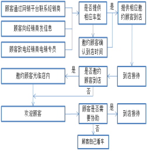
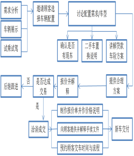
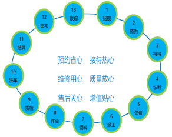
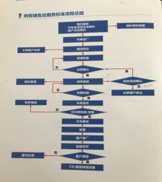
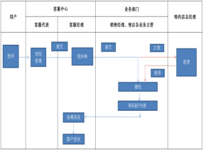
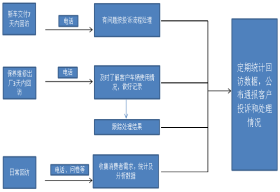

Evaluation Only. Created with Aspose.Words. Copyright 2003-2017 Aspose Pty Ltd.
一、客户接待
（一）适用岗位:接待(问询)岗位
（二）工作流程:

（三）具体要求:
二、销售导购
（一）适用岗位:销售岗位
（二）工作流程:

（三）具体要求:
车辆交付:协助客户验收车辆，了解车辆各项功能的操作、保修范围、保养间隔等售后服务事宜，提供正规发票、合格证、保养手册、信息表、使用说明书等齐全手续。三、保养维修：
（一）适用岗位：前台接待
（二）工作流程（流程图）

具体要求：
1.规范维修保养服务作业流程，明确服务顾问、维修技工、维修主管和技术经理等相关人员岗位职责，严格把守汽车保养和维修质量关，从源头上保障汽车安全用行。
2.严格遵守国家机动车维修行业管理规定和厂家相关规定，审核维保岗位人员的技术资格和技术水平，定期组织相关岗位人员进行专业技术和职业道德培训，提高维修技术人员的专业和职业操守，为客户提供优质的保养维修服务。
3.建立完整真实的用户档案和车辆维修档案，以便对用户进度主动提醒预约服务，预约接待人应记录车辆的维修和保养情况，并做好相应的设备、零件和工位的准备、保障预约的顺利实施。
4.客户到达维修站前台接待应礼貌热情接待，了解客户的需求并与客户一同环车检查，把客户车辆主要事项如实登记在接车（预检单）；参考车辆过去的维修记录和实际情况、综合技术人员的意见提供合理的保养维修建议，开具（维修工单）向客户说明保养和维修项目必要性、价格与作业需时，客户认同确认签名，方可进行维修保养作业。
5.项目交接维修技师根据（预检单）和（维修工单）项目确认进行作业，如维修保养过程中检查发现车辆有其他问题需填写（增项申请单）及时交接给前台接待和客户沟通，必要时带客户到维修车间确认增修项目，得到客户同意确认签名后方可继续作业，对不在店无法书面确认的客户应用带有录音功能的手机或短信、微信通知客户确认同意后才可作业，保留录音和文字记录防止出现消费纠纷。如客户不同意增修项目则在工单上备注为注意项目。
6.对于待料配件，在客户同意采取调拨或订货的情况下，填写（配件订货单）通知配件计划员，配件计划员负责跟踪订货，在取得待料配件后通知前台接待，前台接待确认配件后再及时通知客户。
7.维修技师在完成本人负责项目结束后进行自检，组长再逐一检查各项修理项目合格后签名确认，并联系质检人员和维修主管对车辆进行完工检查，质检人员进行车辆最终确认后在（维修工单）和(作业项目检查表）上签字，作为车辆完成保养维修的出厂凭据。如质检不合格交由组长跟进处理，如交车时间延长需通知前台接待和客户沟通。
8.在保养维修项目中更换下来的旧件，应有维修技师统一整理好放在旧件展示区做好展示准备，维修接待带领客户观看和说明更换下来的旧件和故障、还有必要性和安全性。
9.终检合格后，前台接待应和客户一起确认保养、维修、洗车的效果，对照（维修工单）、（增项申请单）、（作业项目检查表）讲解本次保养和维修项目，讲解后询问客户还有没有疑问，前台接待根据实际情况作出相应处理。
10.客户结算后和客户一同去提车，交车时告知客户我们交车后72小时内会对车辆保养维修后的电话回访关怀，关怀车辆的行驶情况。
11.在维修保养车间安装监控设备，对保养维修作业实时监控和视频录像，视频录像应保留不少于一个月，便于各方回查。
三、保养维修
（1）对应岗位：服务顾问、顾关专员、车间技师、备件专员、车间质检主管。
（2）工作流程：（流程图）

具体要求：
1.规范接待、保养、维修服务作业流程，明确工作分配服务顾问、维修技师、维修组长与技术主管等相关人员岗位的职责。严格把关车辆维修保养的质量，保障汽车的安全运行。严格遵守国家机动车维修行业管理规定和厂家相关规定，审核维保岗位人员的技术资格和技术水平，定期组织相关岗位人员进行专业技术和职业道德培训，提高维修技术人员的专业和职业操守，为客户提供优质的保养维修服务。
2.为了优化服务能力，避免工作拥挤，顾关专员定期以短信提醒、电话邀约、电子邮件主动向客户预约服务。交接服务顾问进行跟踪接待。
3.车辆进厂服务顾问第一时间指示车辆停放指定车位，礼貌地向客户咨询保养维修需求，将客户需求详细记录在《接车问诊单》，与客户一起环车检查车辆外观、确认检查项目、客户声明事项，当面为车辆铺设维修四宝。客户签名确认后通知技术主管将车辆开入受理检查，进行保养维修前的故障诊断或受理检查。服务顾问以《接车问诊单》检查结果，参考车辆过去的维修记录和实际情况、综合技术人员的意见提供合理的保养维修建议，开具《委托交修单》向客户说明诊断结果、交修项目、费用、预计交车时间，客户确认签名后，将《接车问诊单》及《委托交修单》个一份交客户收执，作为取车凭证。告知客户在维修过程中如发现其他修改/追加项目，将会联系客户，并取得同意后在维修，敬请客户安心。服务顾问在客户确认维修后，把《维修单》移交给技术主管进行保养维修作业。
4.技师根据《维修单》项目进行作业，如维修保养过程中检查发现车辆有其他问题需填写《维修报价单》在报价单上备注清楚必需维修的项目与建议的项目，并由仓库人员进行维修零件报价，由班组长签名确认后交给服务顾问与客户进行沟通。必要时带客户到维修车间确认追加项目，得到客户同意确认签名后方可继续作业，对不在店无法书面确认的客户，应用带有录音功能的手机或短信、微信通知客户，确认同意后才继续可作业，如客户不同意维修追加项目则在报价单上签名确认。
5.规范车间维修质量控制，提供客户车辆的一次修好率。维修技师在完成本人负责项目结束后进行自检，组长再逐一检查各项修理项目合格后签名确认，并联系质检人员和维修主管对车辆进行完工检查，质检人员进行车辆最终确认后在《维修单》和《最终检查表）上签字，作为车辆完成保养维修的出厂凭据，如质检不合格交由组长跟进处理。维修技师把更换下来的旧件，统一整理好放在旧件展示区做好展示准备，交接服务顾问作交车前准备。
6.服务顾问针对车辆环检、核实《接车单》检查项目并记录在系统、确认旧、废件、恢复车辆进店的初始状态，完成最终检查后，在《完工检查表》、《完修卡》上签名，打印《结算单》，并通知客户交车。服务顾问以《结算单》向客户解说维修项目、费用、检查结果。完成交付手续后，服务顾问把《结算维修单》与《完工检查表》交给客户，引导客户到交车区取车。并展示更换下来的旧件，说明质保，目送客户。
7.服务提醒：向客户宣导预约的好处及预约的方式。 维修后续关怀，交车后30分钟，服务顾问发送感谢短信；3日内电话关怀客户车辆的修用车情况；7天日客服专员电话关怀客户对于本次维修保养的满意度。
四、咨询投诉
（一）适用岗位：客服岗位
（二）工作流程：（流程图）

注：
一、客服下发的抱怨单范围：
1.厂家下发的投诉
2.新车回访时客户抱怨
3.售后回访时客户抱怨
4.客户来电反映时抱怨
二、2日内处理完毕的抱怨单（必须在24小时内响应，48小时内处理完成）
1.反馈抱怨表格给客户部汇总
2.客服回访客户，满意或审核
三、2日内未处理对的抱怨单
1.升级未“升级投诉”
2.告知总经理或业务经理处理
3.客服进行回访，确认问题处理情况及满意度
（三）具体要求：
1、加强对售后服务人员的培训,建立客户服务档案,健全投诉处理机制,明确投诉处理责任人以及处理权限、流程、时限等,对客户的咨询和投诉做到及时处理,及时回复,及时汇总反馈。
2、实施投诉分类分级管理机制,正确判断客户投诉类型和紧急程度,分析客户投诉的产生原因,制定具有针对性的解决方案,确保问题在最短时间内得到有效解决。能当天解决的问题不能拖延到第二天;因岗位权限制约无法解决的,马上向上一级管理人员报告寻求协助;在48小时内未能解决的投诉,上报部门主管采取应对措施。
3、客户关系管理部对投诉产生的原因、解决方案进行总结分析,及时向有关情况向公司决策层及相关部门主管进行反馈,并有针对性地提出整改建议,推动公司经营运行水平的整体提高。
4、严格按照《消费者权益保护法》等法律法规的要求,自觉履行经营者责任义务,着力营造安全放心的消费环境,依托消费维权站及时妥善解决消费纠纷,加强消费投诉数据监测分析,不断提升服务效率和服务质量。
五、评价反馈
（一）适用岗位：客服岗位
（二）工作流程：（流程图）

（三）具体要求：
1、建立客户回访机制,销售顾问在在车辆交付使用后3天内进行电话回访,服务顾问在顾客车轮保养维修出厂后2天内进行电话回访,及时了解客户车辆使用情况及建议、意见。在回访过程中做好详细记录,对客户的建议和意见做好跟踪处理。
2、在目常采取电话回访、客户满意度问卷调查等多种方式,收集消费者的需求及意见,客户关系管理部定期统计、分析相关数据,及时向公司决策层和有关部门主管反馈有关信息,为公司经营发展决策提供参考。
3、推行消费者投诉信息公示制度,按月、按季、按年进行周期统计,公开通报客户投诉和处理情况,按照奖优罚劣的原则对有关责任部门、责任人采取相应的处理措施,强化内内部监督,激励员工优化管理和严格自律,减少客户投诉,保护消费者合法权益。